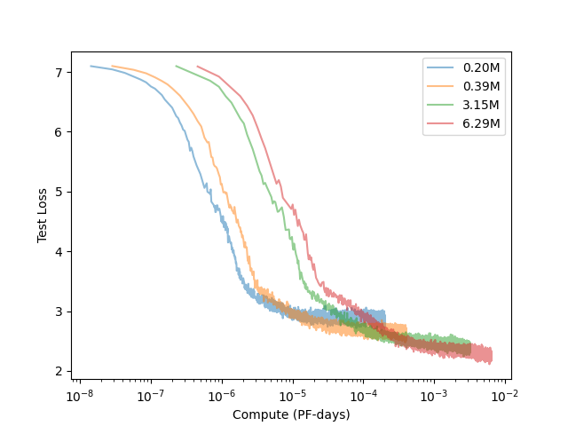

Over the summer Neuralink held a compression challenge where 200x lossless compression was needed to send electrode recordings wirelessly. This was mocked as being impossible but inspired a similar challenge from comma.ai, a company developing an open source autopilot. This blogpost explains my submission to the comma challenge that is comparable to second place.

The challenge is to "losslessly compress 5,000 minutes of driving data." An example video of driving is shown below. (This video isn't actually from the data provided)
The video is low resolution, just 256x128. Since the full 5,000 minutes of footage would be very large, the data has been heavily compressed using a VQ-VAE to make it easier to handle.

Using the VQ-VAE network the video is compressed from raw 256x128 frames to 10 bit 16x8 frames. This intermediate frame is called the latent representation and it being 10 bit means its values can take on any integer from 0 to 1023. If we only store the latent representation and decoder we can recover the original image. Note however that this is lossy compression which means information is lost when compressing. Below is the same example video but now compressed with the VQ-VAE.
Since each frame is compressed independently, there is temporal artifacting between them, but it captures the general features of the image. What is interesting is that we can find features in the latent representation directly. Below is the average of all the latent frames, with a visible horizon and road lines despite the low resolution.

Before compression the data is about 915 mb, while the first place submission is about 270 mb, which gives a compression ratio of 3.4.
Arithmetic coding is a popular lossless compression technique. Lossless compression means that no information is lost in the process and is different from lossy compression formats such as jpeg that lose quality when compressed. To begin, arithmetic coding first needs a model that assigns a probability to each character of how likely it is to appear. An example is shown below:
| Character | Probability |
|---|---|
| a | 0.2 |
| b | 0.3 |
| c | 0.5 |
We also need a message to compress and in this case we will use "bac". To begin encoding the message we split the range from 0 to 1 into three different parts corresponding to the characters, with each interval's width dependent on its probability. Since the model assigns the highest probability to "c", it has the largest interval, while "a" and "b" have smaller intervals. The first letter of the message is "b", so the message has to be contained within the interval from 0.2 to 0.5. Since we know that the message has to be in that interval we can again subdivide it according to our characters and their probabilities. The second letter is "a" so the message must be contained within the new "a" interval, and we then further subdivide it into the three parts. We continue like this until the message has been fully encoded. The final interval that our message falls in is from 0.23 to 0.26 because, for every single point inside the interval, the first three letters of the message are "bac".

However, we haven't actually compressed the message yet. We now need to convert this range into a binary sequence that can be stored. To do this we will split the interval from 0 to 1 in half; if the interval of our message falls below 0.5 we record a 0, and if it falls above 0.5, we record a 1. For our example, since the interval 0.23 to 0.26 is below 0.5, we record a 0 and split the range from 0 to 0.5 in half. We repeat this until the binary sequence is entirely contained within the interval of 0.23 to 0.26. For the message "bac" the encoding is 001111.

To decode the encoded message, you simply do the reverse of the encoding. First, convert the binary 001111 to decimal to get 0.234375. Since this falls within the range of 0.2 to 0.5 the first letter is "b". This is repeated until the message is recovered. However, you also need an end condition, because you could continue decoding a message forever. You can either define a specific character in the vocabulary to be an end-of-sequence character or simply stop at a specific length.
What was described above is called infinite precision arithmetic coding because it requires infinite precision. Computers do not have infinite precision and if you were to try and implement this it would fail for longer sequences because the intervals would become so tiny that the computer would not be able to represent them properly. This excellent blog post explains the finite precision version of the algorithm that works for longer sequences and that I used for my implementation.
As previously mentioned for arithmetic coding to work you need a model to provide probabilities for each symbol. Conveniently included in the repository with the driving data is a GPT-2 medium sized model (about 350 million parameters) that is trained on 3 million minutes of driving data to predict the next token. What they did was flatten the 10-bit 16x8 latent representation into 128 "tokens" and the model takes in a fixed content length of the past n tokens, produing a probability distribution across all 1024 possible values for the next token.
We can plug this model directly into arithmetic coding and use its probabilities to compress the data, and while it works, there are two major problems. The first problem that the model itself takes up 614 mb, so storing the model would take twice the space of the first place submission. The second problem is that because the model is so large, it is extremely slow. On my GPU (RTX 3070 Ti) it runs at 130 tokens per second which doesn't sound terrible, but since there are 768 million tokens (5,000 minutes * 1,200 frames per minute * 128 tokens per frame) it would take 68 days.
As an aside, this isn't actually a novel idea, and this paper proposed exactly this method but with language models and text compression instead of driving data.
At this point it is clear we are going to have to train our own model. It will almost certainly be worse than the one comma trained but if there is any hope of achieving a good compression ratio with fast speeds, it needs to be done.

The cool thing about cross entropy is that you can use the loss to estimate how well it will compress. The cross entropy implementation in pytorch uses natural log, but if we convert it to base 2 we get that the model needs about 3.6 bits per symbol. Since each symbol normally takes 10 bits we can do 10/3.6 to get a compression ratio of 2.78. This is already better than the second place submission! It's not quite right though because we also need to store the model which is about 7 mb so the actual compression ratio will be closer to 2.7.
While the size of the model is no longer an issue it is still painfully slow. It generates at 908 tokens per second which is a definite an improvement, but it would still take 10 days to decompress all the data.
If speed is an issue, we can always just train a smaller model; however, the performance drops as it gets smaller. Instead of shrinking the model we can change what it's predicting.
It is currently predicting one token at a time. So to decode an entire 128 token frame, the model needs to be run 128 times. This is because it's an autoregressive process so the previously generated tokens are passed into the context window of the model when it generates the next token. What if instead of predicting one token at a time we predict one frame at a time? We can make an independence assumption that tokens within a frame won't meaningfully help predict other tokens within the same frame, just the previous frames are good enough. With this assumption, we can modify the transformer to instead produce probabilities for every single token in a frame at the same time. This is a great idea because it means the model is 128 times faster for free.
Another advantage of predicting on a frame level actually comes from an implementation detail with the original model. Since the frames are flattened down into 128 tokens, feeding a frame sequence into the model would prevent it from distinguishing where a frame begins or ends. To fix this, an extra token is added to the vocabulary called the BOS, or "Beginning of Sequence" token, and it's used to separate frames. The problem with this, however, is that now all the frames are 129 tokens instead of the original 128. This is not ideal if you're trying to compress the data because the sequences are now longer. However,` with the modified frame level transformer we can get rid of the BOS token completely and instead add another positional embedding for frame position.
As a sanity check that this independence assumption is reasonable, we can compare the loss graphs of the two models. While this is not an exact apples to apples comparison because of the differing vocabulary sizes (1024 vs 1025), it should be close enough.
.png)
The models eventually converge to about the same loss so this seems to validate the independence assumption. The great thing about this is that the new model can now generate at a blazingly fast 116,224 tokens per second. This means that to decode all 5,000 minutes of driving data it would take only 2 hours!
Alongside the 5,000 minutes of driving data we need to compress, there is another 95,000 minutes of driving data we can use for training. The first baseline model has around 3.7 million parameters and is trained for 1 epoch. Most of the training details are unimportant, but shuffling the data and using Muon instead of AdamW were the two most significant improvements. Below is the loss graph and the final loss is about 2.5.
So far the size of the baseline model was chosen arbitrarily but it has a major impact on the compression ratio. A larger model has a lower loss and can therefore compress better but the model itself takes up more space. Conversely a smaller model takes up less space but compresses worse. There is some optimal model size where the tradeoffs are balanced to achieve the maximum compression ratio.
To get an idea of model size and loss I trained many different models. They're relatively small, the largest being only 9 million parameters but I am gpu poor and don't want to wait a month for a training run.
| params | n_layer | dim | n_head | muon_lr | adamw_lr |
|---|---|---|---|---|---|
| 196608 | 1 | 128 | 1 | 0.02 | 0.0003 |
| 393216 | 2 | 128 | 2 | 0.02 | 0.0003 |
| 1572864 | 2 | 256 | 2 | 0.02 | 0.0003 |
| 6291456 | 8 | 256 | 8 | 0.02 | 0.0003 |
Every model was trained with a batch size of 2^20 and a Muon learning rate of 0.02 and an AdamW learning rate of 0.0003. The models are all trained for 1 epoch which is probably longer than they need. The loss graph converges rather quickly and the loss stays around the same. I could have probably figured out the compute optimal training steps but I couldn't be bothered.
This plot is a log-log plot with the cross entropy loss on the y axis and training time on the x axis. Here training time is really just equivalent to compute since the batch size is the same for all of the models. Notice how the larger models eventually lead to better loss in the same amount of time and that there is a compute optimal frontier traced out by each run.
Since we have many differently sized models and their cross-entropy loss we can use them to approximate the parameter-loss scaling with a power law like proposed in "Scaling Laws for Neural Language Models". Following their convention I am using non-embedding parameters. Below you can see the fitted power law on another log-log plot where the x axis is parameter count and the y axis is cross entropy loss.

We can use this graph to get the compression ratio graph by converting from base e to base 2 and doing 10/f(x) as mentioned before. This is because originally it took 10 bits to represent each symbol.

However we also have to store the model so we need the function for model size as a function of parameters. For this I am assuming 16 bit parameters because the models are using bfloat16.